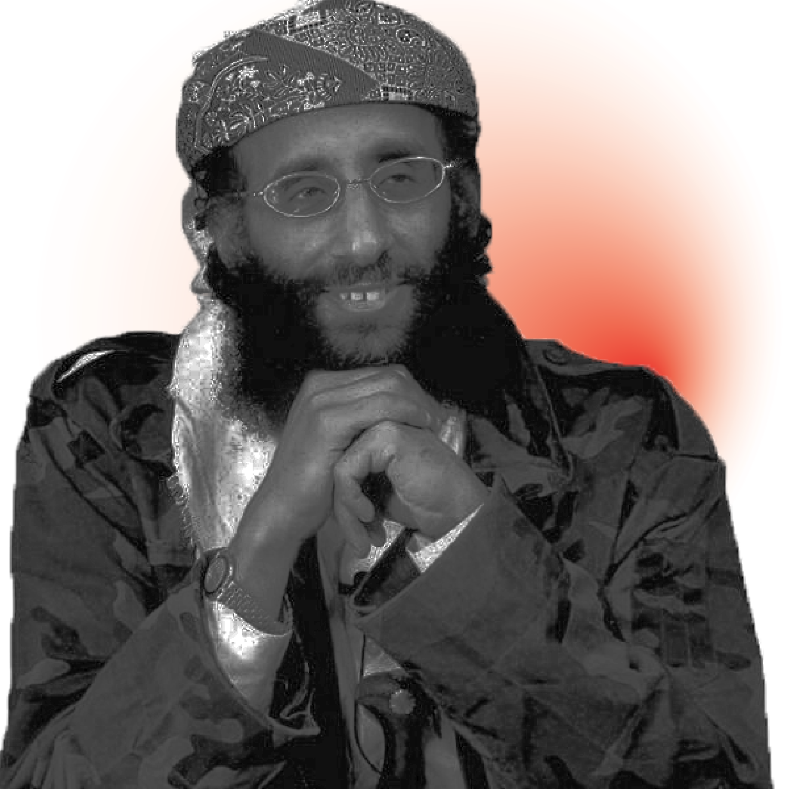

  <section class="pagecontainer" id=page6>
    <div class="container">

      <div id="headwrapper">
        <div id="head">
          Ask Sheik Anwar
          <div id="subhead">
            <span class="bold italic">may allah accept his martyrdom</span>
          </div>
        </div>
      </div>

      <div id="waveguywrapper">
        
      </div>

      <div id="arrowwrapper">
        
      </div>

      <div id="questionwrapper"><div id="bigletter">
          <span id="q">Q:</span>
        </div><div class="question">
          <h1><span class="bold italic">Anonymous from New York, USA asks:</span></h1>
          <p><span class="italic">My question is not an unusual one, many of our brothers have asked similar questions before. I have a desire to give my life in the Way of Allāh S.W.T. and get martyred in His Way and confront with enemies in the phase of ‘bil yadd’ (by action). But we’re not given this opportunity due to some security problems which our brothers are facing because of the difficult time that we’re going through. Secondly, if a person has an urge to fight in Allāh S.W.T’s Way and he has no channel through which he can approach the brothers on the battlefield, what shall he do? He cannot find anyone who can lead him to join the brothers but has a deep urge to fight in Allāh’s Way and give his life for Allāh S.W.T., what shall he do? Plz answer these questions to me as I’m not able to find anyone.</span></p>
        </div>
      </div>


      <div id="questionwrapper">
        
        <div id="bigletter">
          <span id="a">A:</span>
        </div>
        <div class="question" id="answer">
            <h1><span class="semibold">Sheikh Anwar Al-Awlaki Answers:</span></h1>
            <p>Whether the brother has a channel to join the brothers or not it is better for him to perform his duty of Jihād in the West. <span class="bold italic">On the battlefield, you are just another soldier, but in the West <a href="https://www.youtube.com/watch?v=LQmHKl3oNu0" target="_blank">you are an army on your own.</a></span> When Nu’āim bin Mas’ūdcame to Rasūlullāh ﷺ as mentioned by the narrators of sīrah, Rasūlullāh ﷺ told him: with us you are only one man but go back to them and weaken them as much as you can. Our advice to you is: Among us you are just one man, remain where you are and weaken the enemy from within as much as you can. If we have brothers bringing the battle to the US, France, Britain, Germany, Denmark, Australia, that would have much more effect in weakening the enemy than having brothers join us from those countries. <span class="bold italic">The West brought us war and destruction let’s give the West back what it gave us.</span></p>
          </div>

    </div>

    <div id="footwrapper">
      <div id="head">
        Ask Sheikh Anwar

        <div id="subhead">
          <span class="bold italic">(may Allah accept his martyrdom)</span>
      </div>

      </div>
  </section>
